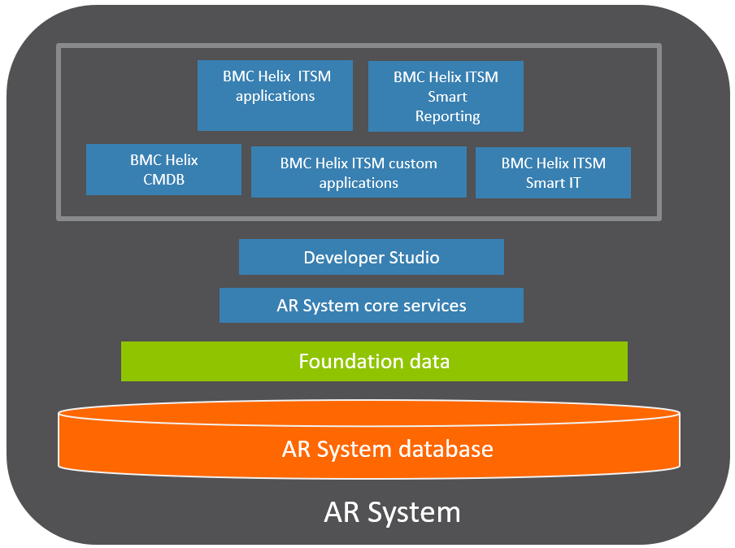
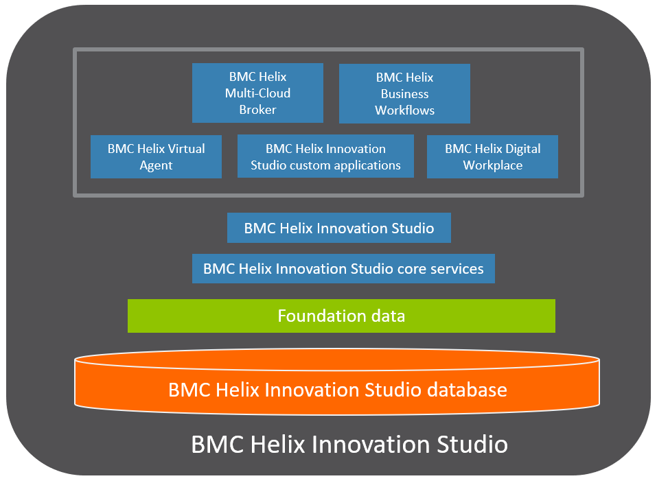
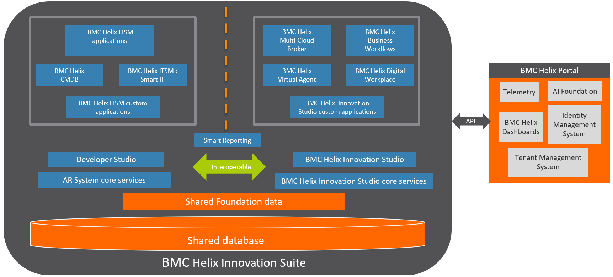

Architecture
BMC has consolidated all Service Management products on one single application environment that combines capabilities of Action Request System and BMC Helix Innovation Studio.
BMC Helix Innovation Suite is a single-tenant common environment for BMC Helix ITSM and BMC Helix Innovation Studio applications.
(Versions earlier than 21.02) AR System architecture
Action Request Systemis a professional development environment that leverages the recommendations of the IT Infrastructure Library (ITIL). Using AR System, nonprogrammers can build powerful business workflow applications
Companies use AR System applications to track diverse items such as, stock trades, benefits data, inventory assets, spare parts, and order fulfillment.
One of the most common uses ofAR System is to automate internal service desks.
For more information about AR System architecture, see AR System architecture.
The following diagram shows AR System architecture for versions earlier than 21.02:

(Versions earlier than 21.02) BMC Helix Innovation Studio architecture
BMC Helix Innovation Studio helps you to build your own applications with the help of different designer consoles, deploy them for the end users of these applications, and manage or configure them.
BMC Helix Innovation Studio helps you establish data requirements, expose fields for your user interface, and implement complex powerful business processes.
For more information about BMC Helix Innovation Studio architecture, see Digital Service application architecture  in BMC Helix Innovation Studio documentation.
in BMC Helix Innovation Studio documentation.
The following diagram shows BMC Helix Innovation Studio architecture for versions earlier than 21.02:

BMC Helix Innovation Suite
BMC has consolidated all Service Management products on a single application environment that combines capabilities of AR System and BMC Helix Innovation Studio. This allows you to simplify your deployment architecture significantly and considerably reduce operational costs.
BMC Helix Innovation Suite provides:
A shared database between AR System and BMC Helix Innovation Studio.
A common Foundation data for applications that run on the BMC Helix Innovation Suite .
Ability to interoperate between development tools. For example, you can call a process, defined by using BMC Helix Innovation Studio in AR System. The process is called by triggering a filter written in Developer Studio.
The following diagram shows BMC Helix Innovation Suite architecture:

BMC Helix Innovation Suite architecture consists of the following components:
|
Component |
Description |
|
Shared database |
A common database forAR System, BMC Helix Innovation Studio, and BMC Digital Workplace. |
|
Shared Foundation data |
A common Foundation data for applications. |
|
AR System core services |
The core AR System services add functionality such as approval process, assignment process to the environment. The core services include:
|
|
BMC Helix Innovation Studiocore services |
BMC Helix Innovation Studiocore services supports the enterprise applications. The core services include:
|
|
Developer Studio |
Developer Studio is an integrated development environment (IDE) for AR System applications. It provides all the application development functions of the previous Administrator tool with a modern, powerful, easy-to-use interface. |
|
BMC Helix Innovation Studio |
BMC Helix Innovation Studio is a graphical user interface used to develop and tailor applications or libraries. You can use the designer tabs in BMC Helix Innovation Studio to create views, records, and business logic for an application or a library. |
|
BMC Helix ITSM applications |
A BMC Helix ITSM application consists of forms, workflow, and related objects that are built by using Developer Studio. The following Remedy applications are available on BMC Helix Innovation Suite : |
|
BMC Helix Innovation Studio applications |
BMC Helix Innovation Studio application consists of records, processes, and related objects that are built by using BMC Helix Innovation Studio. The following BMC Helix Innovation Studio applications are available with BMC Helix Innovation Suite : |
|
BMC Helix ITSM custom applications |
Custom applications built by using Developer Studio. |
|
BMC Helix Innovation Suite custom applications |
Custom applications built by using BMC Helix Innovation Suite . |